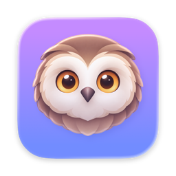
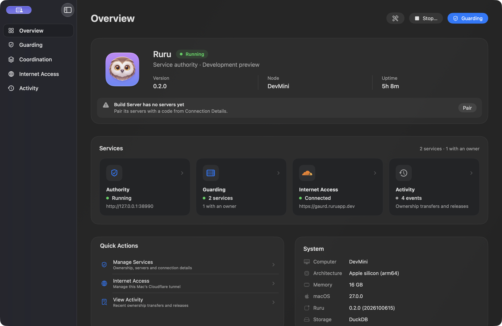

PREFERRED PRIMARY
ActiveServer A
SwiftBotService console
RunningHandling the workloadLease renewed. Output enabled.

ruru. GitHubRuru is an open-source macOS service coordinator for high-availability apps.
It keeps ownership clear, tells you when a server goes offline, and helps your apps take turns safely.
Native macOS app · macOS 15+ · Open source
Server A renews its permission while Server B waits.
A simplified loop with accelerated timing. Compatible apps acquire leases and stop output when permission expires. Ruru doesn’t power on servers or route website traffic.
A clear answer to who may act.
Ruru keeps coordination separate.
Close the window. Keep watching.
See ownership, connections, and what changed.
All in one native macOS console.
Coordinate SwiftBot or your own apps. Each service gets its own credentials, lease length, and ownership history.
Service setupChoose the server you’d like in charge. Compatible clients can coordinate a safe return when it’s ready.
How preferences workBuilt-in Cloudflare Tunnel setup gives participating servers an HTTPS address to reach your Ruru Mac. A read-only connection check separates the local listener, connector, and public health.
Internet access guideIf the owner stops renewing and no server takes over within 15 seconds, Ruru sends a macOS or Discord alert that the service is down—and when it recovers. You can also get alerts for failovers, UPS power loss, low battery, restored power, planned shutdowns, and Ruru issues. Participant activity joins searchable ownership history.
Explore the docsSee power-source and battery telemetry reported by participants. Opt-in alerts cover UPS transfer to battery and battery at 20% or less; compatible clients can hand off ownership during graceful shutdown.
Learn moreAn opt-in catalogue shows locations reported by your servers. Your apps keep their files and serve their own workloads.
Coordination APIIntegrate with the RuruClient Swift package or the documented HTTP protocol. Service coordination beyond a single app.
Integration guideA familiar native console for your services.
No dashboard to host. No browser required.

When connectivity gets messy, ownership needs to stay clear. Ruru records grants durably and asks cooperating apps to respect their permission deadlines.
Read the architectureRun Ruru on a Mac your servers can reach.
Pair your apps, choose your settings, and keep an eye on ownership.
Ruru is in early development. Public release builds aren’t available yet.
Features and behavior may change as the app grows.